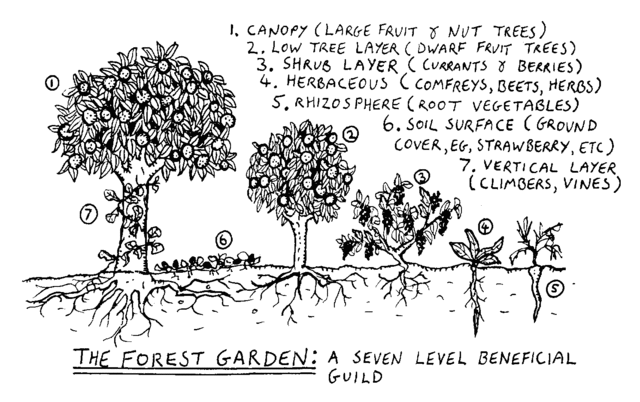

Software Forest#

Fig. 6 The software forest is multi-layered like a forest garden. (Image source: SF1).#
The software forest is a multidimensional garden, enriched by connections and minimal, iterative changes. Both the practice and artifacts of software development can seem daunting, like an unfamiliar forest full of mystery and surprises. However, through software gardening, we see these forests as opportunities for balanced cultivation.
Forest gardening offers innovations from an ecological cultivation perspective by caring for trees, understory vegetation, soil, and other environmental factors. Forest gardens take time to create because their slow-growing nature requires patience and careful, long-term nurturing. Software forests are also created gradually, “… starting with the existing, living, breathing system, and working outward, a step at a time, in such a way as to not undermine the system’s viability.” SF4 Nourishing the system in this way helps us practice primum non nocere (“first, do no harm”) to the garden and components within, conserving energy for necessary adaptations.
Dense networks of relationships surround software forest gardens in the form of software environments. Some of these environments are portable, similar to Wardian cases that provide loosely coupled habitats for software organisms (for example, through environment managers). Others are exhibited through abstract relationships as nurse logs, Hügelkultur, or mycorrhizal-like associations which redistribute energy among the entirety of a software region.
As software gardeners we must consider how energy is transferred to various portions of the forest. Adventitious code, which “volunteers” by accident of growth, may create scenarios of energy waste in the form of cognitive or performance misalignment. All waste in the forest is food SF5, therefore we must imagine and craft new homes for wasted energy through appropriate means. This chaos of this soft-scaping (curating the software garden towards a goal) is in constant flux, tugging on our capacities as student and teacher of the garden to encourage growth and avoid harm.
“What gardens demand of us is lifelong learning.” SF6 We discover and are discovered within the software garden. As software forest gardens grow, they demonstrate emergent properties which are well suited for practices such as evolutionary architecture, object-orientated design, and coupling analysis. These assist software gardeners as a shed of multi-dimensional concepts that must be employed to truly achieve effective multi-layered software garden maintenance.
Graham Burnett. Forest garden diagram to replace the one that currently exists on the article. 2006. URL: https://commons.wikimedia.org/wiki/File:Forgard2-003.gif (visited on 2024-05-17).
{kind=link}
Robert A. de J. Hart. Forest gardening: cultivating an edible landscape. Chelsea Green Pub. Co, White River Junction, Vt, 1996. ISBN 978-0-930031-84-8.
Kagawa, T. and S. Fujisaki. Rittai nogyo no riron to jissen (theory and practice of three-dimensional structural farming). Tokyo, Japan: Nihonhyoronsya, 1935.
Brian Foote and Joseph Yoder. Big ball of mud. Pattern languages of program design, 4:654–692, 1997.
William McDonough. Waste equals food: our future and the making of things. Awakening–The Upside of Y2k, The Printed Word, Spokane, 1998.
Viviane Stappmanns, Mateo Kries, Vitra Design Museum, and Wüstenrot Stiftung, editors. Garden futures: designing with nature. Vitra Design Museum, Weil am Rhein, 2023. ISBN 978-3-945852-53-8.